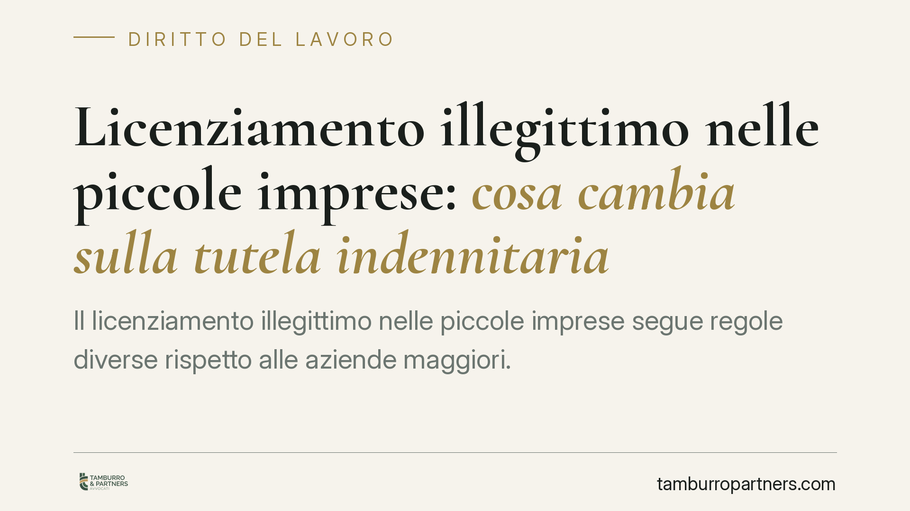

Licenziamento illegittimo nelle piccole imprese: cosa cambia sulla tutela indennitaria
Il licenziamento illegittimo nelle piccole imprese segue regole diverse rispetto alle aziende maggiori. Comprendere la soglia dimensionale, la data di assunzione e il regime applicabile è decisivo per quantificare la tutela spettante. Facciamo ordine sul quadro normativo vigente, segnalando anche un'ipotesi di evoluzione giurisprudenziale che, al momento, richiede verifica.

Il quadro: perché la dimensione dell'impresa conta
Nel diritto del lavoro italiano la tutela contro il licenziamento illegittimo dipende da due fattori principali: la dimensione del datore di lavoro e la data di assunzione del lavoratore.
La soglia di riferimento è quella dei 15 dipendenti nell'unità produttiva (o nel comune), oppure 60 a livello nazionale. Al di sotto di questi numeri si parla di "piccola impresa", per la quale il legislatore ha previsto una tutela ridotta: non la reintegrazione nel posto di lavoro come regola, ma un'indennità economica.
Il regime dell'art. 8 della L. 604/1966
Per i lavoratori assunti prima del 7 marzo 2015, la disciplina applicabile alle piccole imprese è l'art. 8 della Legge 15 luglio 1966, n. 604. La norma prevede che, in caso di licenziamento dichiarato illegittimo, il datore possa scegliere tra la riassunzione e il pagamento di un'indennità compresa tra un minimo di 2,5 e un massimo di 6 mensilità dell'ultima retribuzione globale di fatto.
È importante chiarire un punto spesso frainteso. La L. 108/1990 ha introdotto una maggiorazione dell'indennità massima (fino a 10 o 14 mensilità) legata all'anzianità di servizio del lavoratore. Questa maggiorazione opera *all'interno* dell'ambito dell'art. 8 — cioè per i datori sotto la soglia dei 15 dipendenti — e non riguarda le imprese che superano tale soglia: per queste ultime, infatti, si applica un regime di tutela diverso (reale o, per gli assunti post Jobs Act, indennitario "maggiore"). Non c'è quindi contraddizione: la maggiorazione è un correttivo interno alla tutela delle piccole imprese, parametrato sull'anzianità.
Il discrimine del Jobs Act
Per i lavoratori assunti dal 7 marzo 2015 in poi si applica invece il D.Lgs. 23/2015 (cosiddetto contratto a tutele crescenti). Anche qui la piccola impresa gode di una tutela ridotta rispetto alle aziende maggiori, ma con parametri e importi distinti da quelli dell'art. 8.
La data di assunzione è dunque lo spartiacque fondamentale: determina quale corpo normativo governa la vicenda e, di conseguenza, l'entità della tutela.
L'importo non è mai automatico
Un principio vale per entrambi i regimi: l'indennità massima non spetta in automatico. L'importo è rimesso alla valutazione discrezionale del giudice, che tiene conto di elementi quali l'anzianità di servizio, le dimensioni dell'impresa, il comportamento delle parti e le condizioni delle stesse. Chiedere il massimo non significa ottenerlo.
Una possibile evoluzione da verificare
Circola la notizia di una pronuncia della Corte costituzionale che avrebbe inciso sull'art. 8 della L. 604/1966, eliminando o ridimensionando il peso del requisito dimensionale e ampliando la tutela indennitaria per i lavoratori delle piccole imprese assunti ante 7 marzo 2015.
Segnaliamo l'ipotesi per dovere di completezza, ma invitiamo alla prudenza: al momento gli estremi della pronuncia non risultano a noi verificabili attraverso i canali ufficiali. Prima di fondare qualsiasi strategia su questa notizia è indispensabile accertarne l'esistenza e il contenuto esatto. Una decisione della Consulta, se confermata, avrebbe effetti immediati sui giudizi pendenti e su quelli futuri.
Cosa fare in concreto
- Verifica la data di assunzione. Prima o dopo il 7 marzo 2015: è il primo elemento che determina il regime applicabile.
- Accerta la dimensione dell'impresa. Conta il numero di dipendenti nell'unità produttiva, nel comune e a livello nazionale alla data del licenziamento.
- Rispetta i termini di impugnazione. Il licenziamento va impugnato per iscritto entro 60 giorni dalla ricezione; entro i successivi 180 giorni occorre depositare il ricorso giudiziale o avviare il tentativo di conciliazione, pena la decadenza.
- Raccogli la documentazione. Lettera di licenziamento, buste paga, contratto e ogni comunicazione utile a ricostruire anzianità e retribuzione di riferimento.
- Non dare per scontato l'importo massimo. Consigliamo di valutare con un professionista una stima realistica della tutela spettante, verificando anche l'eventuale rilevanza di novità giurisprudenziali.
---
Contributo informativo a cura di Tamburro & Partners Avvocati — Avv. Giuseppe Tamburro. Non costituisce parere legale.
Ogni storia di lavoro ha i suoi tempi.
Se gestisci HR e vuoi un confronto su contenzioso, ispezioni o licenziamenti, scrivi allo studio. Ti rispondiamo entro un giorno lavorativo.